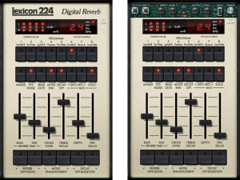
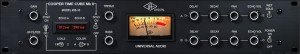
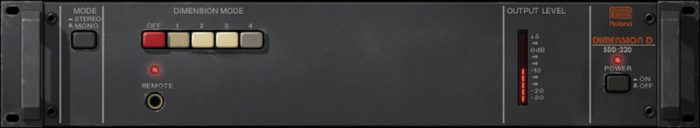
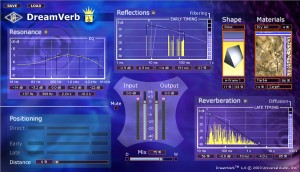

Проектът „Дряновски баби“ – поглед отвътре [част 2]
Posted by Boris Bonchev on / 0 Comments

„Дряновски баби“ по време на звукозаписна сесия в Sofia Session Studio
В три публикации ви разказваме за нашата работа по проекта „Дряновски баби“. В първата част разказахме за подготовката и звукозаписа. Сега идва ред на редактирането на материала, динамична и честотна обработка и смесването.
Редактиране на материала
Редактирането на материала, тук се състоеше от три действия:
Изчистване на частите без пеене
По време на записите на проекта „Дряновски баби“ не използвахме нойс – гейтове, което наложи в частите, където гайдата свири соло каналите на гласовете да се изчистят от изкашляния изкашляния или други шумове. Това е от една страна лесно, но от друга – твърде отговорно действие. Важното тук е да се запазят дъховете в началото и опашките в края на куплетите. По този начин песните звучат по-живо и по-естествено – така, както в същност са изпяти. Може би ще ви се стори, че обръщаме прекалено внимание на дребни детайли, но именно тези детайли са същността на нашия занаят. Именно те в голяма степен са щрихите, които разграничават добрия от посредствения звукозапис.
Елиминиране на DC Offcet
Проверката и елиминирането на DC Offcet – ако такъв е наличен, също е рутинна работа. Това явление се получава понякога по време на записа. То представлява изместване на вълната по нейната ос и може да доведе до нежелани последици при последващата обработка. За наша радост, в материала DC Offset почти липсваше. На малкото места където бе наличен, стойностите бяха минимални и съответно корекциите, които се наложи да направим – незначителни.
Коригиране на фазови разлики
За тези, които не са запознати, фазови разлики могат да се получат тогава, когато един звуков източник се записва с повече от един микрофон. Когато сигналите са дефазирани, при тяхното смесване разликата във фазите се припокрива и звукът се променя. На този принцип работят ефекти като фейзър (Fazer), Фленджър Flanger и Horus. Когато обаче дефазата не е контролирана, тя може да нанесе непоправими или много трудно поправими щети на звуковия материал. За наша радост, при вокалните канали в проекта „Дряновски баби“ нямаше нужда от намеса. Нормално, нужда от корекции имаше при микрофоните на гайдата. За тази цел използвахме Little Labs IBP. Това е най-добрият инструмент за коригиране на фазови разлики, с който съм работил. С негова помощ направихме необходимите обработки така, че материалът да звучи най-плътно и автентично.

Little Labs IBP
Динамична и честотна обработка, смесване
Следващата стъпка в звукообработката беше да добавим определени предусилватели на съответните канали. Сигнала от директните микрофони обработихме с канала на Neve – 1073 и компресора Fairchild 660. В тази комбинация от транзисторен предусилвател и лампов компресор се постига характерен „Neve звук“ и мека лампова компресия. Така вокалите станаха ясни и фиксирани, без да звучат дразнещо и метално.

Neve 1073 & Fairchild 660
Каналите на близките микрофони изпратихме в стерео-група и ги обработихме съвсем дискретно с Pultec EQP-1A и Teletronix LA2A. По този начин те станаха още по-цветни и в същото време хомогенни.

Pultec EQP 1A & Teletronix LA2A
При соловите вокални партии в проекта „Дряновски баби“ използвахме ламповия предусилвател UA 610B, Shadow Hills Mastering Compressor и еквалайзерите Manley Massive Pzssive и Brainworx V3. По този начин те звучат в микса меко, но същевременно изнесено. Опцията за смяна типовете изходни трансформатори на Shadow Hills Mastering Compressor ни даде възможност да дадем фокус на дъното на гласа чрез избор на трансформатори с желязна сърцевина.

UA 610B, Manley Massive Passive, Shadow Hills Compressor & Brinworx V3 EQ
Ефект Процесори
Ефект процесорите, които използвахме в тази продукция са Lexicon 224, EMT 140, Cooper Time Cube, Roland Dimension D и Dream Verb Room Modeller.

Lexicon 224, Rolamd Dimesion D, Cooper Time Cube @ EMT 140
1. Lexicon
224

С помощта на този ревербратор, придадохме на гласовете плътност в средния
регистър. Този процесор има скъп, наситен звук, който чудесно се вписва в
цялостната картина и без да доминира, придава ненадминат обем на
обработвания материал.
2. ЕМТ
140

Този тип ревербратори използват за постигането на ефекта „ревербрация“
метална пластина. „EMT 140“ има ясен и пробивен тон и при добри
настройки и дозиране, може да подчертае определен глас или инструмент, като
същевременно го постави в желаната пространствена позиция . Тук използвахме
EMT 140 при гайдата, като за гайдуницата и ручилото използвахме различни
настройки, филтри и съотношение. По този начин постигнахме отчетливост и
яснота, без да присъстват дразнещите високи среди, които поне на мен
категорично не ми харесват в някои от записите на български фолклор, които
съм слушал.
3. Cooper Time
Cube

Cooper Time Cube е един от най-добрите дилеи, с които съм работил.
Характерно за това това устройство е, че в зависимост от настройките, то
може се впише в цялостната картина по различни начини. Cooper Time Cube
може да придаде, плътност и яркост. Без да се натрапва, в някои случаи и без
да личи, а в трети – умишлено изразително, ефектът добавя чувство за
масовост и простор. Той чудесно се смесва в микса дори когато е по-силен и с
по-високия брой повторения. Нашата цел тук беше този дилей да остане почти
незабележим. Едва когато за тест го изключим, разбираме в същност какво е
участието му в цялостното звучене. Използвахме този ефект за придаване на
обем, в зависимост от темпото и настроението.
4. Roland
Dimension D

Тук ползвахме „Roland Dimension D“ за това, за което той е
най-добър. А именно – да дава цвят и обем. В тази продукция добавихме
малко от него на ручилото. Ручилото е много важен инструмент в тази
продукция, защото тук това е басът. С помощта на този хорус/даблър му
придадохме цвят, разнообразие и по-широка стерео картина, за разлика от
гайдуницата, която поставихме в центъра.
5. Dream Verb
Room Modeller

Едно от добрите качества на този ефект е, че при него отделните части на
ревербрацията мога да бъдат настроени много прецизно. Друго полезно нещо е,
че може да се избере звуковата среда, която е необходима. Използвахме го при
най-бавните песни с голямо закъснение и малка дифузия – за едва
забележим завършек там, където след всички „опашки“ записът
сякаш олекваше.
Очаквайте и последната част от нашия разказ за проекта „Дряновски баби“. Той ще бъде посветен на постпродукцията.